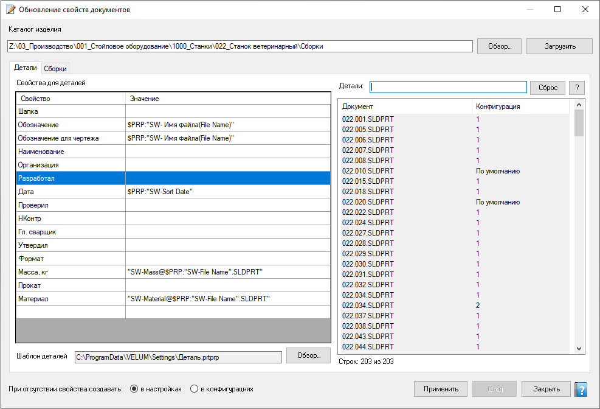

Обновление свойств документов
Пакетное обновление пользовательских свойств деталей и сборок по шаблону из выбранного каталога изделия. Агент не требуется. Доступно только администратору.
Как открыть
Лента Velum → Свойства пакет (уровень admin).
Области окна
- Каталог изделия — корневая папка с деталями/сборками; Загрузить заполняет списки.
- Вкладки Детали и Сборки — у каждой свой список файлов и сетка шаблона свойств; в меню списка — фильтр / исключение по выделенному (см. маски).
- Сетка свойств — имена и значения (и при необходимости шаблоны/подстановки); можно выбрать свойство из справочника пикера.
- Опции создания отсутствующих свойств в настройках документа и/или в конфигурациях (см. подписи на форме).
- Применить записывает свойства для текущей вкладки и выделенных строк; Стоп прерывает.

Вкладка Детали: слева шаблон свойств (имя / значение) и контекстное меню списка выбора; справа — загруженные документы и конфигурации; внизу шаблон .prtprp и куда создавать отсутствующие свойства.
Порядок работы
- Укажите каталог → Загрузить.
- Выберите вкладку Детали или Сборки.
- Отредактируйте шаблон свойств (что и с какими значениями писать).
- Отфильтруйте и выделите нужные файлы.
- Нажмите Применить. Чтобы обработать и детали, и сборки — повторите на второй вкладке.
«Применить» действует только на активную вкладку. Переключение вкладки само по себе ничего не записывает.